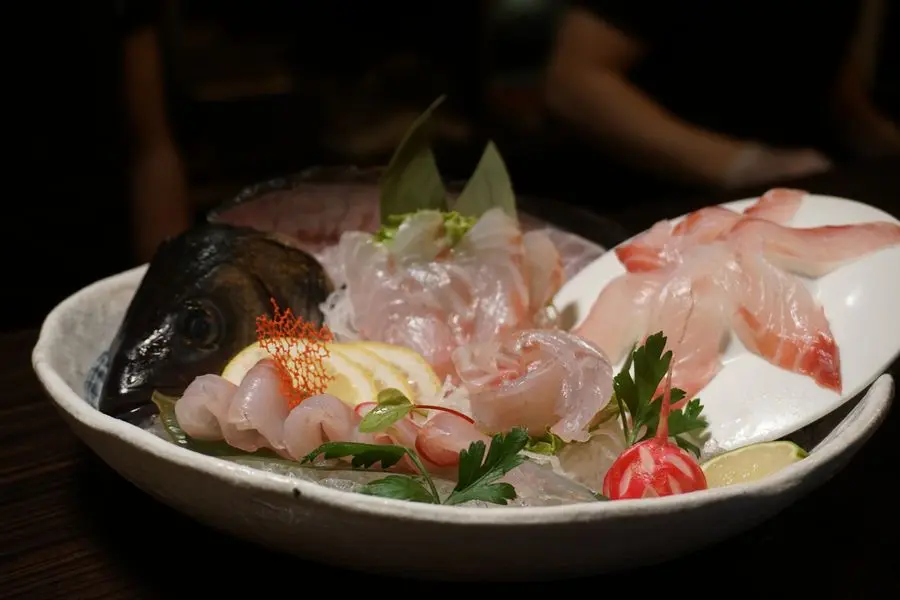

shio famiglia
Una famiglia di tavole giapponesi, nata sul mare di Trieste.
quattro case · quattro città
Un banco di sushi, una izakaya che fa tardi, una sala da tè, un bancone di temaki sul molo. Stessa cucina di casa, quattro caratteri diversi.
Le nostre case, città per città

una famiglia di tavole straordinarie, cominciata nel 2009 con otto sgabelli davanti al porto di Trieste
Aiko Furlan è cresciuta tra Osaka e Muggia; suo marito Davide ha passato vent'anni sui pescherecci del golfo. Il primo banco di shio era un ex magazzino del sale: otto sgabelli, un frigorifero di legno, il pesce che arrivava a piedi dal molo.
Da quel banco sono nate le altre case. shioya è la cucina della sera tardi, con la brace e il sake; shiochà è il pomeriggio, tè e dolci; shiobune è il pranzo in piedi, un temaki e via. Ognuna ha il suo carattere, tutte hanno la stessa regola: si cucina come per chi è di famiglia.
«Volevo che tutta la sala si sentisse come il primo posto al banco: vicino, curato, un po' in famiglia.»